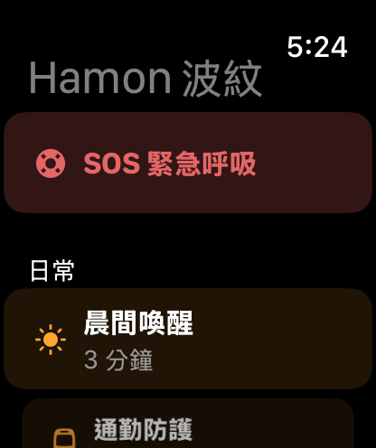
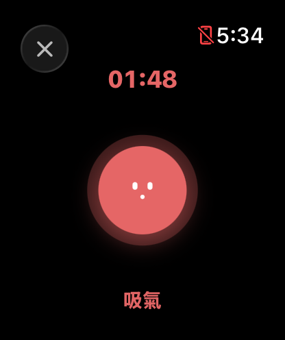
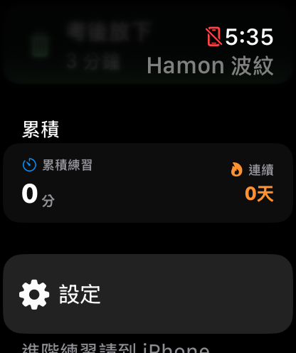
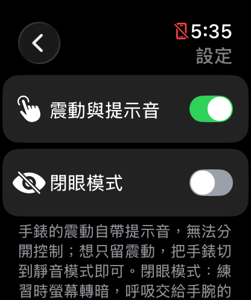

選出你此刻卡住的場景
波紋替你選好節奏，用溫度感的手繪塗鴉風格，陪你呼吸一到五分鐘。
日常調頻
全部職場節奏
全部學習專注
全部深度覺察
回歸呼吸的本質
放空與暫停
回到身體
看見情緒
專注番茄
專注一段，休息交給呼吸
每段專注後呼吸一下；做滿 4 輪，第 4 輪的休息換成眼部舒緩。
專注結束時，我們會用一則通知把你叫回來。
辛苦了
今天完成 0 輪專注，
中間都有好好喘口氣。
環境電台
打造你的專屬專注空間
環境場景
純淨頻率
氛圍音樂
Audio Resources Provided by
Pixabay & Brad Traversy
常見呼吸法
選一個，直接開始
功能示意・會自己播放・點一下就換你操作
開會前、通勤中、睡不著、心裡突然很亂
每個情境都有自己的吸吐節奏、引導文字與聲音。練習長度 1 到 10 分鐘，深度覺察可選 5 到 20 分鐘。
- 晨間喚醒開啟活力的一天
剛起床腦袋還沒開機？不需要用力喚醒它。
吸氣 4 秒・屏息 4 秒・吐氣 4 秒・屏息 4 秒・3 分鐘 - 通勤防護建立你的防護罩
周圍很擠、很吵？建立一個透明的氣泡包圍著你。
吸氣 4 秒・吐氣 6 秒・5 分鐘 - 安撫焦慮找到你的定心錨
心跳很快？這只是身體在保護你。
吸氣 4 秒・吐氣 6 秒・2 分鐘
- 進入心流工作前的對焦
準備開始工作了嗎？幫大腦排除雜訊，溫柔地把注意力帶到眼前的任務上。
吸氣 4 秒・吐氣 6 秒・5 分鐘 - 自信準備上場前的準備
心跳加速，腦袋混亂？花三分鐘整理呼吸，像穿上防彈背心一樣，找回你的穩定度。
吸氣 4 秒・屏息 4 秒・吐氣 4 秒・屏息 4 秒・3 分鐘 - 會議隱形喧囂中找回安靜
漫長的會議讓你只想逃離？睜著眼睛也能冥想，在心裡張開你的結界。
吸氣 4 秒・吐氣 6 秒・5 分鐘
- 考前定心信任你的累積
快考試了，心跳很快？這很正常。
吸氣 4 秒・屏息 4 秒・吐氣 4 秒・屏息 4 秒・2 分鐘 - 擊退拖延微小的第一步
作業好多，但就是不想動？
吸氣 4 秒・屏息 4 秒・吐氣 4 秒・屏息 4 秒・1 分鐘 - 分組焦慮你不需要完美
覺得大家都在看你？你只需要「在」這裡。
吸氣 4 秒・吐氣 6 秒・2 分鐘
- 留白練習Space for Yourself
不需要任何目標，不需要努力放鬆。就把這段時間留給自己。
吸氣 4 秒・吐氣 6 秒・深度覺察可選 5 到 20 分鐘 - 暫停與重啟Pause & Reset
認清自己的感覺並不容易。停下來，問自己：我現在感覺如何？
吸氣 4 秒・吐氣 6 秒・深度覺察可選 5 到 20 分鐘 - 感官定錨Sensory Anchor
覺得腦袋很吵？試著把注意力聚焦在眼前的一個點，讓感官帶領大腦安靜下來。
吸氣 4 秒・吐氣 6 秒・深度覺察可選 5 到 20 分鐘
日常調頻
全部職場節奏
全部學習專注
全部深度覺察
回歸呼吸的本質
放空與暫停
回到身體
看見情緒
專注番茄
專注一段，休息交給呼吸
每段專注後呼吸一下；做滿 4 輪，第 4 輪的休息換成眼部舒緩。
專注結束時，我們會用一則通知把你叫回來。
辛苦了
今天完成 0 輪專注，
中間都有好好喘口氣。
環境電台
打造你的專屬專注空間
環境場景
純淨頻率
氛圍音樂
Audio Resources Provided by
Pixabay & Brad Traversy
常見呼吸法
選一個，直接開始
功能示意・會自己播放・點一下就換你操作
iPhone、Apple Watch、鎖定畫面小工具
都能一鍵開始
SOS 緊急呼吸：心裡很亂時，一鍵開始。
- 鎖定畫面小工具、Apple Watch 錶面、app 內的 SOS 入口都能直達，不用找、不用選
- 主畫面小、中型小工具與鎖定畫面快速呼吸，快速呼吸的情境可自訂
- 17 個日常、職場、學習情境與 SOS 都在手腕上；手腕震動引導、閉眼模式；放下手腕練習不中斷；練完自動同步到 iPhone
- Apple Health：自動寫入「正念分鐘」




日常調頻
全部職場節奏
全部學習專注
全部深度覺察
回歸呼吸的本質
放空與暫停
回到身體
看見情緒
專注番茄
專注一段，休息交給呼吸
每段專注後呼吸一下；做滿 4 輪，第 4 輪的休息換成眼部舒緩。
專注結束時，我們會用一則通知把你叫回來。
辛苦了
今天完成 0 輪專注，
中間都有好好喘口氣。
環境電台
打造你的專屬專注空間
環境場景
純淨頻率
氛圍音樂
Audio Resources Provided by
Pixabay & Brad Traversy
常見呼吸法
選一個，直接開始
功能示意・會自己播放・點一下就換你操作
示範從 SOS 入口直接進入「安撫焦慮」，不經過說明卡
讓每次呼吸，都成為找回平衡的開始。
全部免費，不用註冊，不收集任何資料。